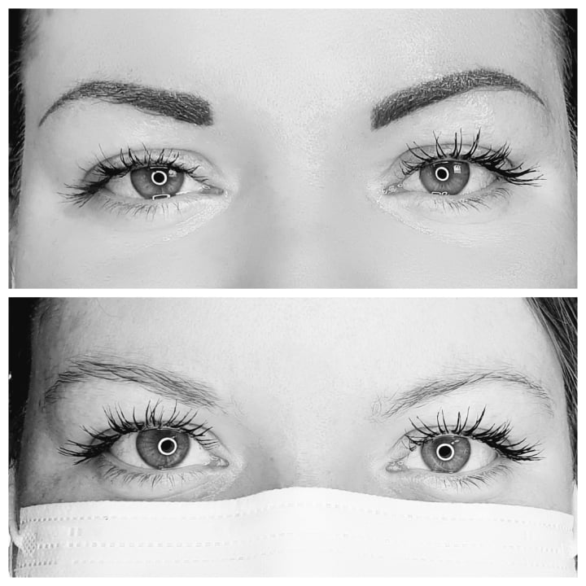
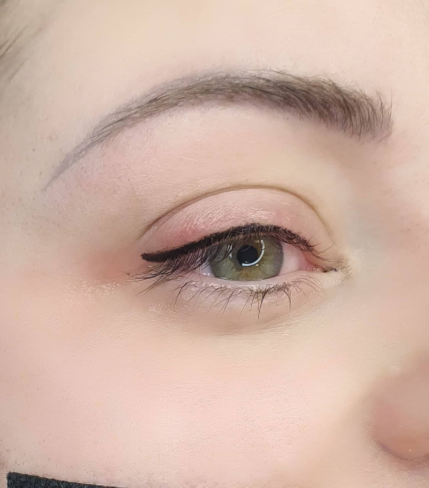
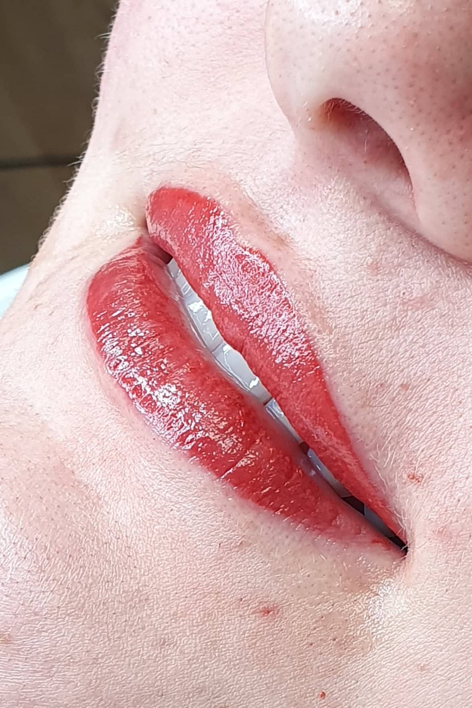

Et si vous vous leviez déjà maquillée ???
Voici tout l'intéret du maquillage semi permanent !
Pour les sourcils : MICROBLADING ou SHADING
Les lèvres : GLAMALYPS , CANDYLIPS, MAGICLIPS suivant le dégradé souhaité !
L'eye liner
ET VOUS LEQUEL EST FAIT POUR VOUS ?
Je m'adapte a vos envies et votre forme du visage !
Contre indication : Les personnes diabétiques et femme enceinte ou qui allaite
Microblading

QU'EST CE QUE LE MICROBLADING ?
Fini le maquillage quotidien des sourcils !
Le microblading est une technique de maquillage semi-permanent qui redessine et harmonise
vos sourcils en créant un effet “poil à poil” ultra-naturel.
Les pigments, déposés sous forme de traits fins, imitent parfaitement le vrai poil et
s’estompent doucement avec le temps.
Vous souhaitez intensifier votre regard ou restructurer votre ligne ?
Le microblading s’adapte à vos envies et à votre visage.
Pendant la cicatrisation (quelques jours), la couleur s’éclaircit d’environ 30 % pour un
rendu très naturel.
Tarifs :
Microblading + retouche à 1 mois : 190 €
Retouche annuelle : 100 €
Eye liner

Maquillage semi permanent des yeux en eye liner dessus ou dessous suivant vos envies !
Le maquillage semi permanent tient entre 2 et 5 ans.
Tarifs :
Eye liner dessous : 170€
Eye liner dessus : 200€
Eye liner dessus et dessous : 350€
Retouche comprise 1 mois après
Retouche après 2 ans 100€
Levres

Le glamalips ou candylips qui est un maquillage semi permanent de la bouche avec le contour
ainsi qu'un dégradé sur les lèvres...
Tient entre 2 et 5 ans
Le choix du pigment sera choisi ensemble, il faut savoir qu'au court de la cicatrisation le
pigment perd ENORMEMENT d' intensité pour donner un résultat final très naturel appelé
glamalips ou candylips pour un effet mat.
Tarifs :
Maquillage semi permanent contour des lèvres et dégradé : 200€
Retouche comprise 1 mois après
Retouche après 2ans entre 120€ et 150€